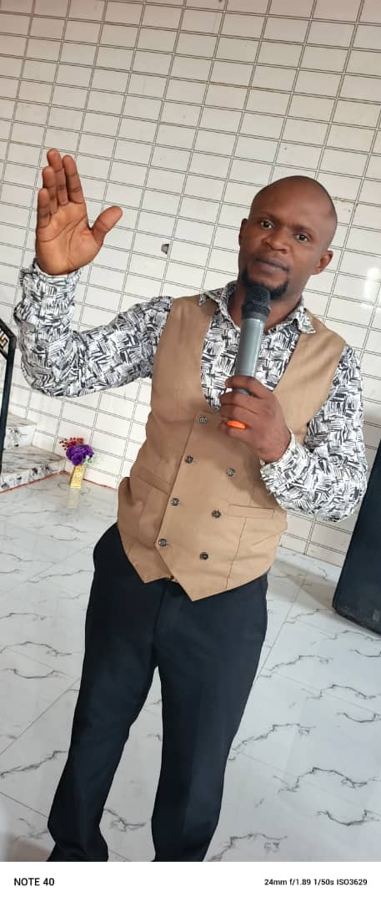
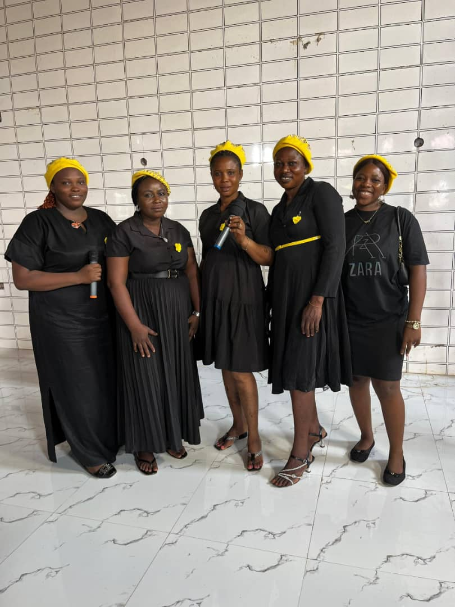

God-appointed men and women of vision, faith, and integrity guiding this ministry.

Apostle Chika Jude Monye is a man of God driven by a burning passion to see lives set free and believers walking in the fullness of who God has called them to be. As the founder and president of Dominion Christian Gathering International, he carries a distinct apostolic grace for healing, deliverance, and the establishment of God's Kingdom across communities and nations.
Under his leadership, DCGI was officially registered with the Corporate Affairs Commission of Nigeria on the 27th of May, 2016 — a moment that marked the formal beginning of what God had placed in his heart years before. Since then, the ministry has grown from a single gathering into a multi-branch movement with a growing national and international footprint.
Known for his fiery preaching, compassionate heart, and powerful ministry of prayer, Apostle Monye believes that every believer carries the seed of dominion — and his life's mission is to water that seed through the Word of God and the power of the Holy Spirit.
His ministry is characterised by miracles, healings, and a deep commitment to discipleship. He continues to raise the next generation of Kingdom carriers, training leaders and planting churches that reflect the glory and nature of God.
"For the kingdom of God is not in word but in power." — 1 Corinthians 4:20
Pastor Chika Rosemary serves as the Vice President and Trustee Secretary of Dominion Christian Gathering International. She is a woman of grace and wisdom, faithfully standing alongside the vision of the ministry and ensuring its administrative and spiritual integrity.
Her service to the body of Christ reflects a deep commitment to excellence, accountability, and godly leadership. She plays a vital role in the day-to-day ministry of DCGI, offering pastoral care, leadership coordination, and faithful stewardship of the ministry's affairs.
"She is clothed with strength and dignity; she can laugh at the days to come." — Proverbs 31:25
These are the faithful men and women appointed as trustees of DCGI, carrying the responsibility of governance, accountability, and spiritual oversight.

A dedicated trustee who has served faithfully in the governance and ministry oversight of DCGI since its founding.
A committed servant of God who brings integrity and dedication to the trustee board of DCGI.
A man of faith and responsibility who faithfully upholds the mission and values of DCGI as a trustee.
A gracious woman of God who contributes her wisdom and dedication to the leadership of DCGI.
Join us for any of our services and experience the community, teaching, and presence of God at DCGI.
Plan Your Visit